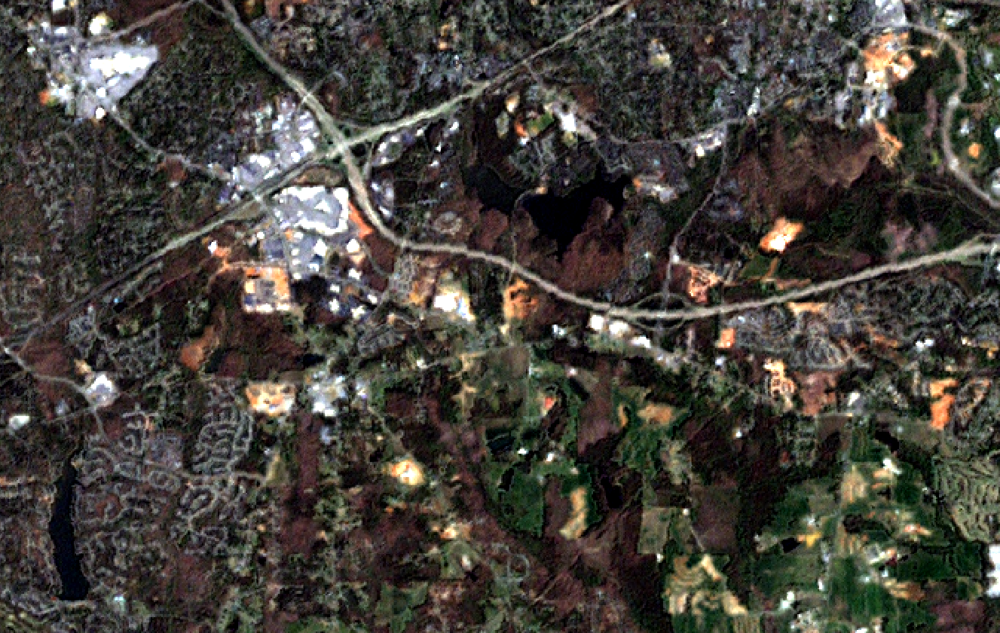

DESCRIPTION
i.fusion.hpf is an implementation of the High Pass Filter Additive
(HPFA) Fusion Technique. It combines high-resolution panchromatic data with
lower resolution multispectral data, resulting in an output with both excellent
detail and a realistic representation of original multispectral scene colors.
The process involves a convolution using a High Pass Filter (HPF) on the high
resolution data, then combining this with the lower resolution multispectral
data. Optionally, a linear histogram matching technique is performed in a way that
matches the resulting Pan-Sharpened image to the statistical mean and standard
deviation of the original multi-spectral image.
Background
- Computing ratio of low (Multi-Spectral) to high (Panchromatic)
resolutions
- High Pass Filtering the Panchromatic Image
- Resampling MSX image to the higher resolution
- Adding weighted High-Pass-Filetred image to the upsampled MSX
image
- Optionally, matching histogram of Pansharpened image to the one of
the original MSX image
Figure:
____________________________________________________________________________
+ +
| Pan Img -> High Pass Filter -> HP Img |
| | |
| v |
| MSx Img -> Weighting Factors -> Weighted HP Img |
| | | |
| | v |
| +------------------------> Addition to MSx Img => Fused MSx Image |
+____________________________________________________________________________+
Source: Gangkofner, 2008
NOTES
- Grasping and testing the various parameters that define the High-Pass
filter's kernel size and center value is a matter of short time.
- Works with any number and type of raster imagery (8-bit, 16-bit)
- The "black border" effect, possibly caused due to a non-perfect match of the high vs. the low
resolution of the input images, can be trimmed out by using the
trim
option --a floating point "trimming factor" with which to multiply the
pixel size of the low resolution image-- and shrink the extent of the
output image.
EXAMPLE
The module is fairly easy to use. Arbitrary examples:
Pansharpening of one band
i.fusion.hpf pan=Panchromatic msx=Red
Pansharpening of multiple bands
i.fusion.hpf pan=Panchromatic msx=Red,Green,Blue,NIR
North Carolina: pansharpening of multiple bands
Example using the North Carolina sample dataset, landsat mapset:
# pansharpening of R, G, B, NIR
g.region raster=lsat7_2002_80 -p
i.fusion.hpf pan=lsat7_2000_80 msx=lsat7_2000_10,lsat7_2000_20,lsat7_2000_30,lsat7_2000_40 suffix=_hpf
# visual comparison
d.mon wx0
d.rgb b=lsat7_2000_10 g=lsat7_2000_20 r=lsat7_2000_30
# color balance pansharpened scene
i.colors.enhance b=lsat7_2000_10_hpf g=lsat7_2000_20_hpf r=lsat7_2000_30_hpf
d.rgb b=lsat7_2000_10_hpf g=lsat7_2000_20_hpf r=lsat7_2000_30_hpf
Figure: Original Landsat 7 RGB color composite at 28.5m resolution (North Carolina, Raleigh subset)

Figure: Pansharpened Landsat 7 RGB color composite at 14.25m resolution(North Carolina, Raleigh subset)
Further examples
Various illustrated examples detailed in the document
i.fusion.hpf, implementation of the High Pass Filter Additive (HPFA) Image Fusion Technique (PDF)
TODO
- Go through Submitting Python
- Access input raster by row I/O
- Support for parallel processing
- Proper command history tracking.
- Add timestamps (r.timestamp, temporal framework)
- Deduplicate code where applicable
- Make verbose level messages shorter, yet more informative (ie report center cell)
- Test if it compiles in other systems
- Check options to integrate in i.pansharpen. Think of FFM methods vs. Others?
- Improve Documentation.lyx
REFERENCES
- Gangkofner, U. G., Pradhan, P. S., and Holcomb, D. W. (2008). Optimizing
the high-pass filter addition technique for image fusion.
PHOTOGRAMMETRIC ENGINEERING & REMOTE SENSING, 74(9):1107--1118.
- "ERDAS IMAGINE." Accessed March 19, 2015. ERDAS
IMAGINE Help.
- Aniruddha Ghosh & P.K. Joshi (2013) Assessment of pan-sharpened very
high-resolution WorldView-2 images, International Journal of Remote
Sensing, 34:23, 8336-8359
SEE ALSO
i.pansharpen
AUTHORS
Nikos Alexandris
Panagiotis Mavrogiorgos
{kind=link}
{kind=link}